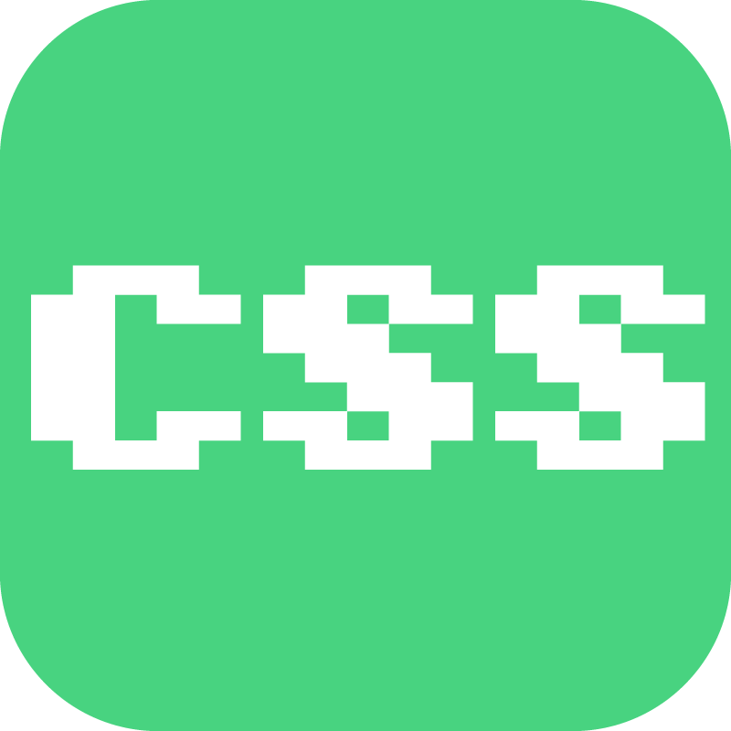

About me
大学では音声情報処理を専門としており、
未来電子のインターンに参加させていただいている普通の大学生です。
大学に入ってから自分のPCを持ったような、典型的な情報系初心者でしたが、
情報処理技術に強い関心をもって、日々プログラミングスキルを高めるため精進しています。
どうも自分は写真を撮られたがらないのか、自画像に使える写真が見つからなかったので、
とりあえず高度にデフォルメ & 美化されたイメージ画像を用意しました。
実物像との激しい差異が見られますが、あくまでも「画像はイメージです」。
history
小学生
中学生
高校生
2017年4月
2018年
2019年7月
2019年8月
何かを作ることが好きで、自由研究でも表彰された
ゲームに熱中する
それまで接点のなかった情報系を大学で学びたいと思い始める
立命館大学 情報理工学部に入学
大学で勉強していく中で音声処理への興味が強くなる
第一希望で音声情報処理研究室に配属される
未来電子でインターンを始める
Skills
触った時間が長い順に左から並べています。

Product